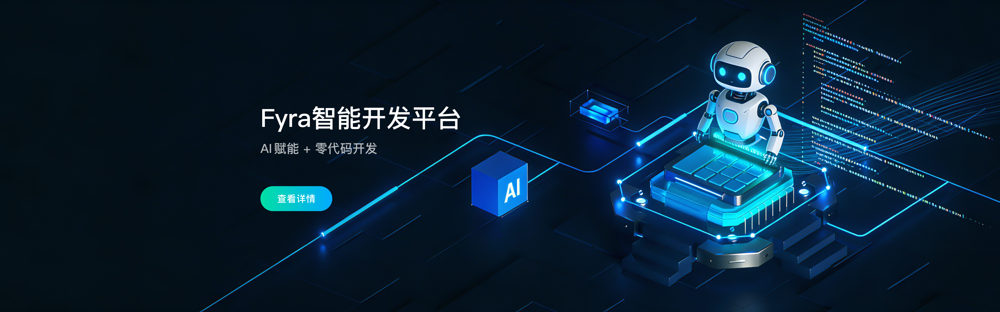

服务大型国央企、政府监管客户和多类建设主体，项目经验覆盖企业级统管与多行业工程场景。
工程数字化，不该只是多个系统的叠加
从企业管理到项目现场，从施工过程到运维交付，筑云帮助客户把分散的数据、模型、设备和流程连接成统一体系。
工程信息分散
统一项目、模型、进度、质量、安全和成本数据，减少重复填报和多系统切换。
监管响应滞后
接入智慧工地、视频、传感器和 AI 识别能力，让现场风险更早发现和闭环。
平台适配困难
依托飞椽 Fyra 快速配置表单、流程、报表、大屏和移动端应用。
建设运维割裂
通过数字孪生与智慧运维，让建设阶段沉淀的数据继续服务资产运营。
以自研平台为底座，覆盖工程建设全生命周期
筑云把零代码开发、智能建造、智慧工地、数字孪生、BIM 咨询和工程数字技术整合为一套可持续运营的能力体系。
飞椽 Fyra 智能开发平台
支撑页面、表单、流程、报表、大屏、APP/H5、设备组态和 AI 应用构建。
BIMCC 智能建造平台
连接工程业务数据、模型数据与物联数据，覆盖进度、质量、安全、成本、协同和数字档案。
全生命周期数字建设服务
提供智慧工地、BIM 咨询、数字孪生运维、工程 XR、智慧展厅和数字化教育服务。
产品平台与服务能力
从项目级快速落地到企业级统一管理，筑云以产品化平台和专业服务支撑不同阶段客户的数字化建设。

技术底座
飞椽 Fyra 是工程行业的 AI + 零代码开发底座。
它把页面、表单、流程、报表、大屏、APP / H5 和设备组态放进同一套能力里，方便项目级快速交付，也方便企业级长期复用。
AI + 零代码快速构建
流程 / 报表业务闭环
大屏 / 移动端多端交付
- 适合项目立项、巡检、验收、报表和移动端场景
- 可与企业既有系统和项目现场数据进行集成
- 可与 BIMCC、智慧工地和数字孪生模块一起使用
飞椽 Fyra 智能开发平台
工程行业 AI+零代码开发底座，支撑页面、表单、流程、报表、大屏和移动端应用快速构建。
- 零代码应用构建
- 流程与报表引擎
- 大屏 / APP / H5 一体
BIMCC 智能建造平台
项目全生命周期数字建造管理平台，覆盖进度、质量、安全、成本、物资设备和 BIMGIS 一张图管理。
- BIMGIS 一张图
- 质量安全进度协同
- 数字档案与交付
智慧工地建设
现场设备接入与智慧监管一体化。
查看智慧工地方案数字孪生与智慧运维
从工程交付到资产运营的一张图。
了解智慧运维BIM 咨询服务
全过程、全专业 BIM 技术服务。
查看 BIM 咨询数字化教育体系
面向高校与职教的智能建造实训体系。
查看教育方案按你的角色与行业，找到适合的数字建设路径
不同客户的工程数字化目标不同。筑云将平台能力、项目经验和行业模板组合为可落地的解决方案。
建设单位
统一项目监管、投资进度质量安全数据和数字化交付成果。
适合：甲方建管、集团统管、项目交付 BIMCC + 数字孪生 + BIM 咨询施工单位
围绕履约、安全质量、进度成本与现场监管提升多项目管控能力。
适合：项目部、区域公司、现场协同 BIMCC + 智慧工地 + 飞椽 Fyra全咨 / 监理
支撑多方协同、过程留痕、问题闭环和验收证据沉淀。
适合：监理留痕、过程协同、验收归档 项目级平台 + BIM 咨询 + 数字档案政府 / 集团监管
构建区域项目一张图监管、风险预警、智慧工地接入和数据驾驶舱。
适合：监管平台、区域监管、数据驾驶舱 监管驾驶舱 + 数据中台房建与公共建筑
质量、安全、进度、成本、资料和模型一体化管理。
适合：医院 / 文体 / 教育 / 科研办公 医院 / 文体 / 教育 / 科研办公民航机场
飞行区、航站楼和配套设施数字化施工管控。
适合：大体量、复杂接口、协同建设 大型复杂工程协同轨道交通 / 铁路
线性工程 BIM+GIS 一张图与多标段协同。
适合：长线路、多标段、多专业 多标段 / 多专业 / 多参建方水利水务 / 抽水蓄能
智慧工地、设备监测、工区协同和风险预警。
适合：隧洞、工区、远程监管 复杂工区现场监管自研技术底座，让工程数字化更快落地、更易扩展
筑云不仅提供软件平台，也将多年工程行业实施经验沉淀为技术引擎、行业模板、交付方法和持续运营能力。
BIM + GIS + UE + 3DGS 多引擎融合
将二维地图、三维模型、实景数据和业务数据融合到统一可视化底座。
飞椽 Fyra 零代码敏捷交付
用工程行业模板和可视化构建能力缩短系统建设周期。
工程 AI 与智能体应用
面向安全管理、文档查询、数据分析和平台操作引入 AI 辅助能力。
物联网与多源数据接入
支持智慧工地设备、视频、传感器、业务系统和工程数据联动。
行业模板库与项目经验沉淀
覆盖房建、基建、民航、水利、市政、教育医疗等场景。
开放集成与国产化适配
支持与既有系统、数据库、中间件和国产化软硬件环境协同。
1000+ 项目实践，覆盖多类工程建设场景
智能建造平台、智慧工地、轨道交通、水利水务等真实项目经验，用来判断是否做过相近场景。

葛洲坝集团智能项管平台
集团级项目管理、资金进度穿透与工程数据协同。
能力关键词：集团统管、进度穿透、数据协同
重庆机电控股集团企业级数字建造
围绕投资、建造、资产形成集团级工程管理平台。
能力关键词：投资建造一体化、集团管控
沙特吉达市中心综合开发基础设施项目
服务海外复杂基础设施工程信息管理与多方协同。
能力关键词：海外协同、复杂基础设施
重庆轨道 15 号线管控平台
融合 BIM、智慧工地和现场数据，支撑轨道交通过程管控。
能力关键词：轨交管控、现场数据、智慧工地
重庆来福士超级地标数字建造
面向复杂曲面异形件、BIM 预拼装和地标工程协同。
能力关键词：异形结构、地标工程、BIM 预拼装
深圳罗田水库输水隧洞工程智慧平台
面向水利隧洞建设与运维阶段，构建质量溯源和智慧管理能力。
能力关键词：隧洞建设、质量溯源、智慧管理用资质、技术资产和项目经验，支撑长期数字化建设
筑云科技持续沉淀企业资质、专利软著、标准规范、国产化适配能力和行业奖项，为建设工程行业客户提供稳定、专业、可持续的数字化产品与技术服务。
官方热线
023-68682379，商务对接 18584713100（微信同号），周一至周五 9:00-18:00。
商务微信
可使用 18584713100 添加微信咨询，便于项目资料发送和商务对接。
服务网络
重庆总部、深圳分部、成都分部支撑多区域客户交付。
公众号 / 二维码
微信咨询与公众号二维码集中放置，便于移动端快速触达。
微信咨询
公众号